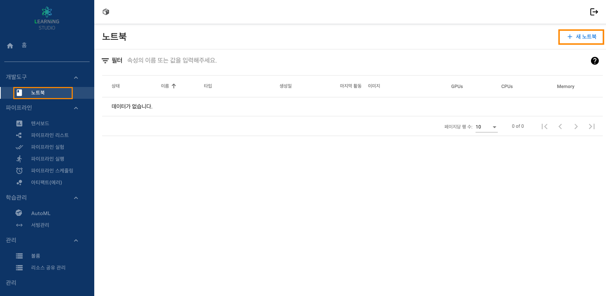
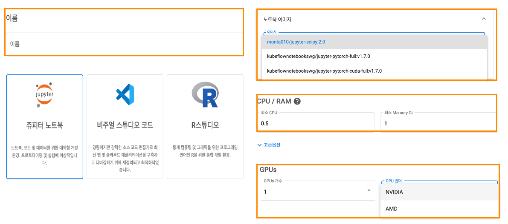
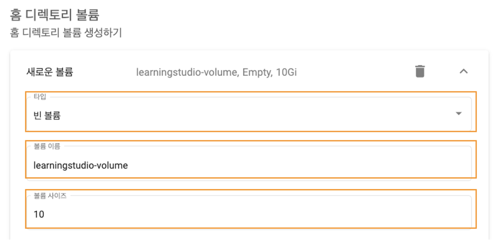
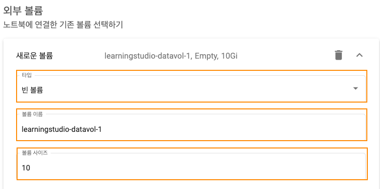
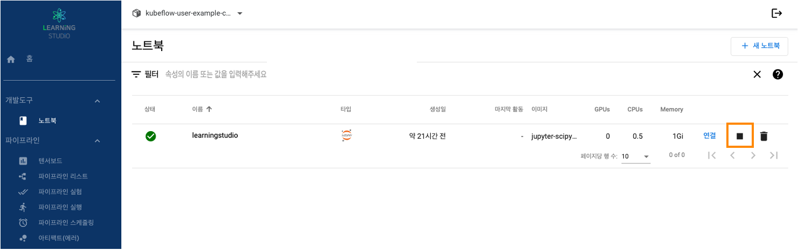

1. 러닝스튜디오 대시보드 접속합니다.
2. 좌측에 메뉴에서 “개발도구 → 노트북” 탭을 선택합니다
3. 우측 상단에 위치한 “새 노트북” 클릭
4.새로운 노트북 생성
| 항목 | 구분 | 설명 |
|---|---|---|
| 이름 | 이름 | 러닝스튜디오 대시보드에서 노트북 인스턴스 식별에 사용 |
| 네임스페이스 | 노트북 인스턴스가 배포될 쿠버네티스 네임스페이스 지정 | |
| 노트북 이미지 | 이미지 | 노트북에 사용한 이미지 선택 |
| CPU / RAM | 최소 CPU | 노트북 인스턴스가 사용할 최소CPU 코어의 수 |
| 최소 RAM | 노트북 인스턴스가 사용할 최소 RAM 수 | |
| GPUs | GPUs 개수 | 노트북 인스턴스에서 사용할 GPU 코어의 수 |
| GPU 벤더 | 서버에 장착 GPU 벤더 지정 |
5.볼륨 생성(홈 디렉토리, 외부 디렉토리)
 | 항목 | 구분 | 설명 |
|---|---|---|
| 구분 | 홈 디렉토리 | 노트북 서버에 대한 홈 볼륨 |
| 외부 디렉토리 | 홈 디렉토리 볼륨 외 볼륨 또는 사전에 생성한 볼륨 | |
| 타입 | 빈 볼륨 | 노트북에 사용한 이미지 선택 |
| 커스텀 | 쿠버네티스가 제공하는 YAML 스크립트형태로 생성하는 방식 | |
| 홈 디렉토리 볼륨 | 이름 | 노트북 이름기반으로 생성됨(노트북이름-volume) |
| 볼륨 사이즈 | 10 | 노트북에 사용할 볼륨 사이즈(GB 단위) |
6.노트북 확인
1. 러닝스튜디오 대시보드 접속합니다.
2. 좌측에 메뉴에서 “개발도구 → 노트북” 탭을 선택합니다
3. 노트북 중지
1. 러닝스튜디오 대시보드 접속합니다.
2. 좌측에 메뉴에서 “개발도구 → 노트북” 탭을 선택합니다